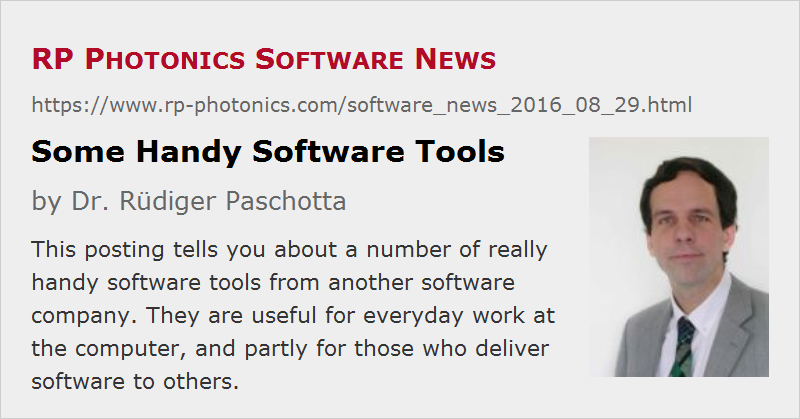

Some Handy Software Tools
Posted on 2016-08-29 in the RP Photonics Software News (available as e-mail newsletter!)
Permanent link: https://www.rp-photonics.com/software_news_2016_08_29.html
Author: Dr. Rüdiger Paschotta, RP Photonics Consulting GmbH
Abstract: This posting tells you about a number of really handy software tools from another software company. They are useful for everyday work at the computer, and partly for those who deliver software to others.

Today I am not writing on any software from RP Photonics, but rather on some really handy software tools from the company Just Great Software which I am regularly using. I tell you about that just because I really like these tools and think they may be useful for you; I am not getting any rewards from these colleagues for recommending their products.
Generally I can say about all their products that they are made with high quality, and if there is an issue, you get competent technical support promptly. You probably know that unfortunately that is not the case for all software vendors.
PowerGREP
PowerGREP is an amazing tool for searching and processing of text and binary files – for example, program source code, log files or PDF documents. It is based on so-called regular expressions, with which you can define complicated search patterns. (Regular expressions are in fact a central theme in products from Just Great Software.) As a simple example, one could easily process a bunch of HTML files, searching for link code, but take only those links where the URL does not begin with “http:” or “https:”, and in that case insert some base address there. Another possibility would be that you have some abbreviated form of links in your text and rework them into real HTML links. Such things already go clearly beyond the capabilities of a simple text tool.
In fact, you can do even for more complicated things, where you would normally think that one definitely will have to make some custom piece of software to get the job done. It is also possible to create certain statistics, extract certain parts from files, restrict search operations only to certain parts, etc. It takes some learning to make use of the more sophisticated features, but you will be amazed how versatile and powerful that tool is. I do not need to do sophisticated things that often, but sometimes it really saves the day.
By the way, I have reported about regular expressions in our own software in a previous post; that article will tell you what it is about.
RegexBuddy
RegexBuddy is a rather convenient tool for working out regular expressions. If you enter a regular expression, you get explained exactly what it will do, and to get fully supported in implementing sophisticated operations. Of course, you can also test regular expressions in there. Further, you can select between many different “flavors” of regular expressions is used in different programming languages and systems. Whether you are just starting with regular expressions or already working with them regularly, this tool can help you a lot.
EditPad Pro
EditPad Pro is a powerful text editor which I use for the source files of the RP Photonics website, for example. Well, of course there are many other good text editors around, but I have been using this one for many years and have often been delighted to get things done very nicely. A few examples:
- The search & replace functionality fully supports regular expressions, which allows me to do quite sophisticated operations. (From there, you can quickly call RegexBuddy.)
- You can assign certain “tools” to function keys. For example, I have set the F5 key such that this will call a program of mine which will “compile” a page for the website. (EditPad also transmits the filename so that the other program knows which file to handle.) This means that I can start that action from the text editor, i.e., without first switching to another software.
- You can create macros e.g. for repeating certain actions in a text file many times.
- The editor works even with huge files.
AceText
AceText is a handy utility with which you can maintain and use a large number of text snippets. For example, when doing software support, certain questions arise relatively often, and once I have formulated a detailed and helpful answer to such a question, I keep it in AceText so that I will quickly get it back when I need it again.
You might also find that useful for snippets of source code, e.g. in C or PHP programming.
You can assign abbreviations to frequently used text snippets, which allows you to very quickly insert one of those e.g. in your text editor. From there, you just call “Ace Type” with a hotkey, type the beginning of your abbreviation or just selected from the displayed list, and it will immediately paste the snippet into your document. This is far more convenient than e.g. opening a text file containing a snippets, searching a snippet there, copying it, going back to your original application and pasting the content there.
AceText can also save a large number of text snippets from your last copy & paste operations, so if you want something from the Windows clipboard which has already been overwritten by a new copy operation, you can quickly get it there instead of finding its source again somewhere else (maybe on a web page which you closed already). This feature may even lead to new working practices – for example, when you're reading a long document, just copy all sentences or paragraphs which do you will need to think about later on (without pasting them already), and at the end you go through all your copied text snippets in AceText. That way, you avoid going back and forth between different applications all the time.
The rest of my posting is interesting only for those who also develop and deploy software:
DeployMaster
DeployMaster is for people who need to deploy software to their customers. It can build an installation package from your compiled program and a set of additional files, e.g. for the help system, demo files, etc. The tool takes care of many details which would be very awkward to handle manually.
Our own software is in fact also processed with DeployMaster; I have been using it for years, and it always worked very reliably; no customer ever got a problem with it.
HelpScribble
When you deliver software to others, you should provide electronic documentation. HelpScribble is a tool for exactly doing that for Windows software – helping you to create WinHelp or HTML Help files. It is very versatile, allowing you to implement many features in your help system.
Certain parts of my software documentation are common for different software products. I can keep these in separate files, and after a change I can easily merge it into the documentation of any particular product.
You could even generate a printable manual from the same content, although I refrain from that since I feel that the structure of an online help system should somewhat differ from the structure of a kind of a document made for sequential reading.
This article is a posting of the RP Photonics Software News, authored by Dr. Rüdiger Paschotta. You may link to this page, because its location is permanent.
Note that you can also receive the articles in the form of a newsletter or with an RSS feed.
|  |
If you like this article, share it with your friends and colleagues, e.g. via social media:
These sharing buttons are implemented in a privacy-friendly way!